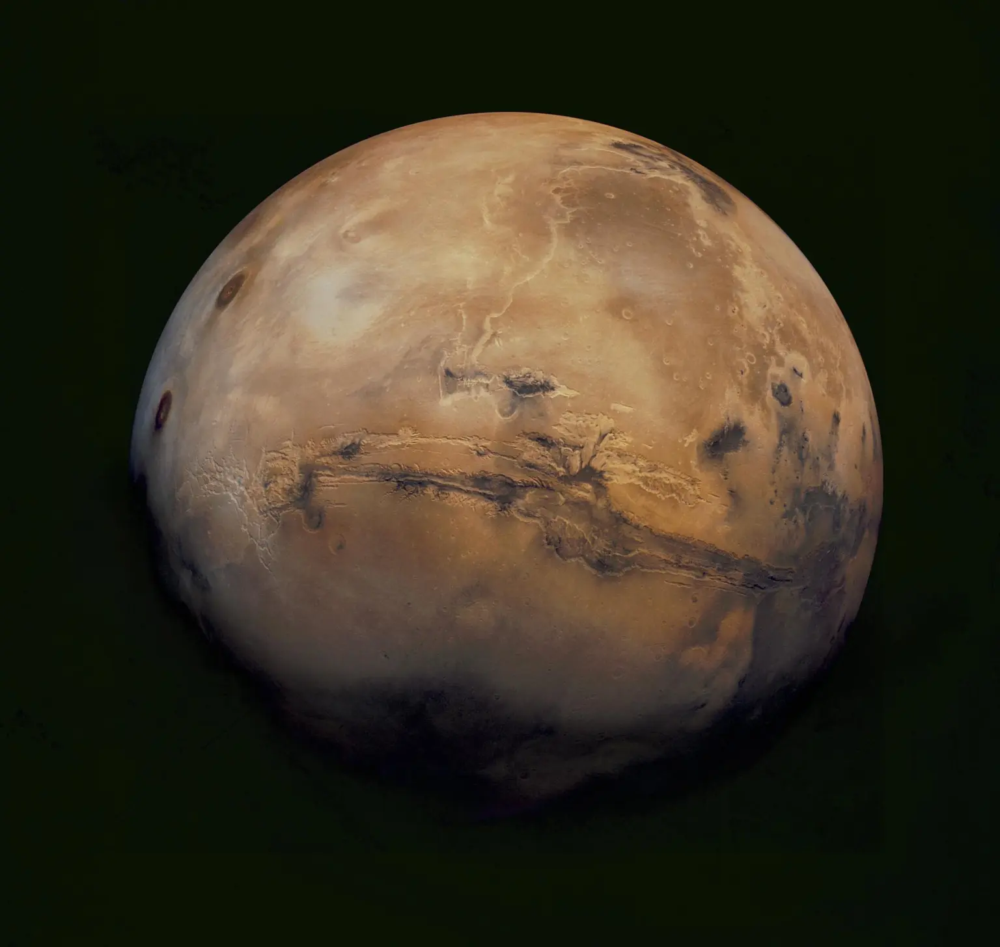
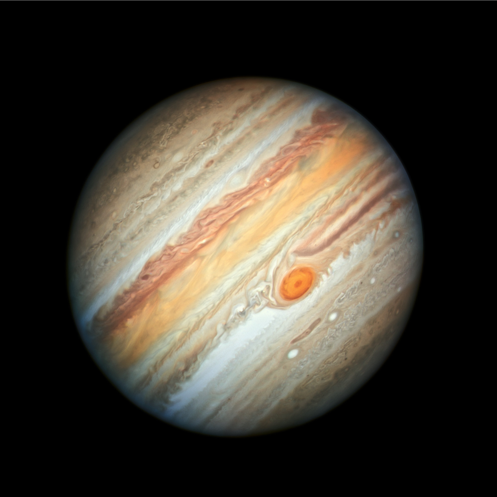
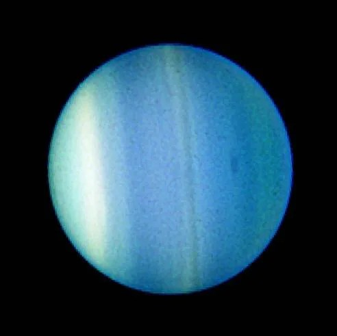

Planet tempat kehidupan berkembang dengan air dan atmosfer pelindung.

🚀 EKSPLORASI TATA SURYA 🌞
Rumah Kita di Alam Semesta
Tata Surya adalah sistem kosmik dengan Matahari sebagai pusatnya. Planet, bulan, dan benda langit lainnya bergerak teratur mengikuti hukum gravitasi.

Bumi 🌍

Bulan 🌙
Satelit alami Bumi yang memengaruhi pasang surut dan fase bulan.
Objek-Objek di Tata Surya

Matahari 🌞
Sumber cahaya dan energi utama Tata Surya.

Merkurius
Planet terkecil dan terdekat dari Matahari.

Venus
Planet terpanas dengan atmosfer tebal.

Mars 🔴
Planet merah yang menjadi target eksplorasi.

Jupiter
Planet terbesar dengan badai raksasa.

Saturnus 💍
Planet bercincin paling indah.

Uranus
Planet es dengan sumbu rotasi unik.

Neptunus
Planet terjauh dengan angin tercepat.